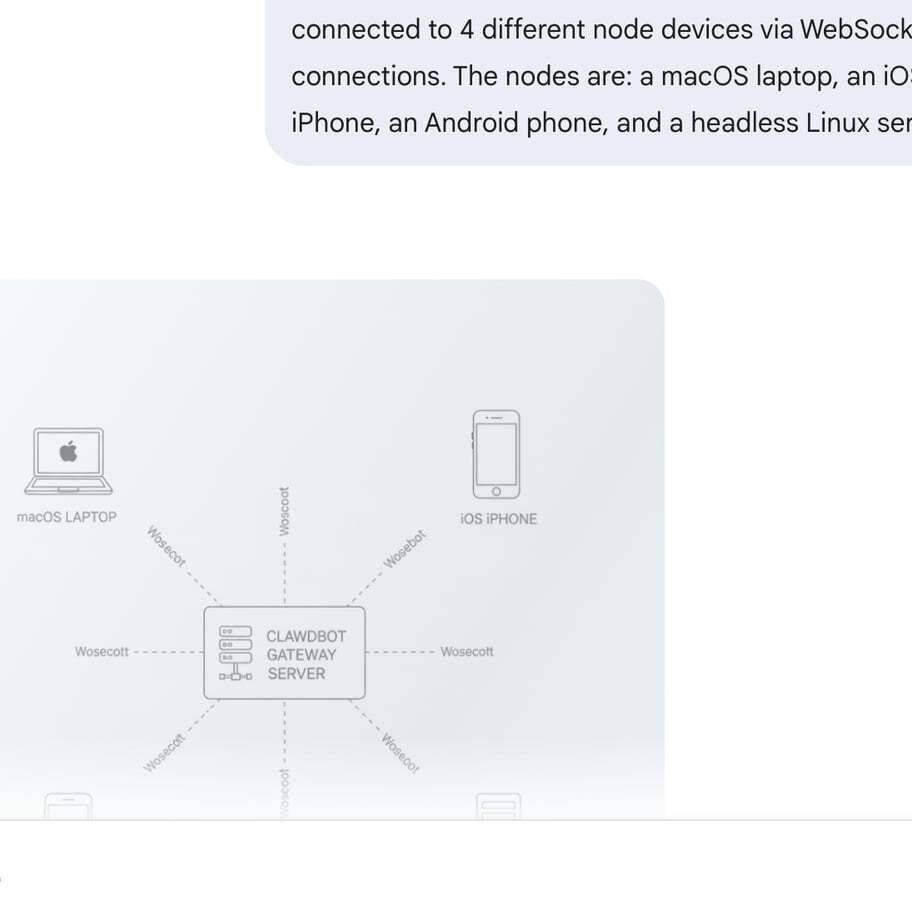
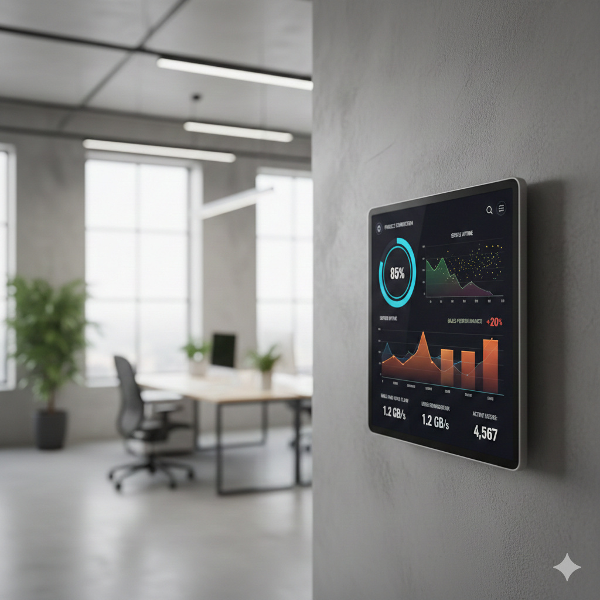
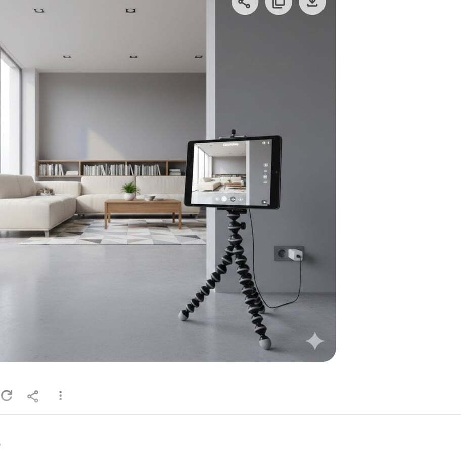
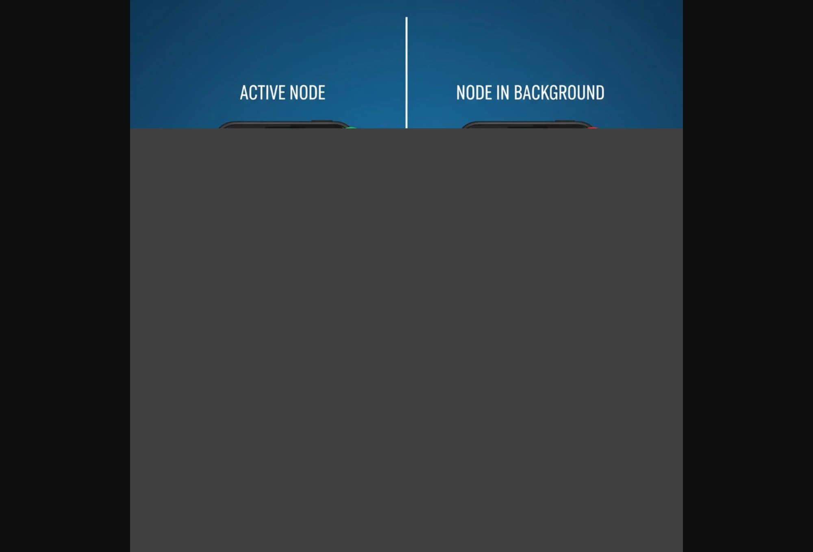
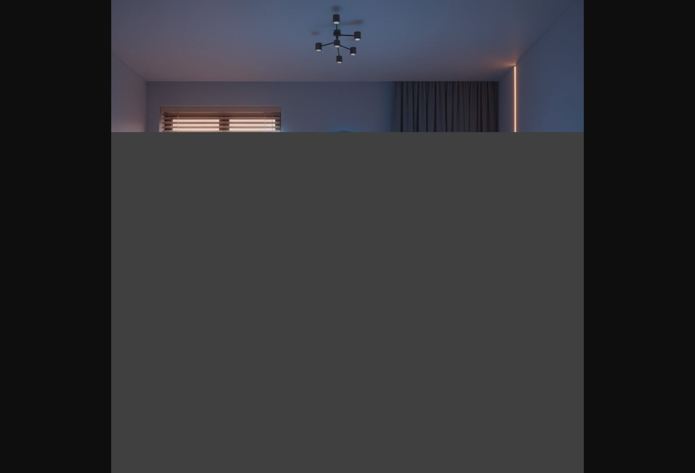
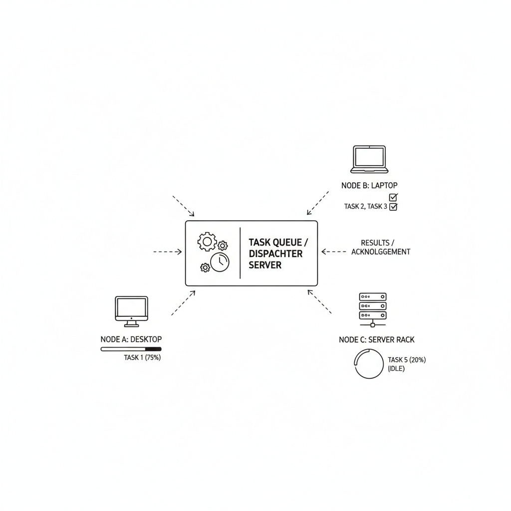

<!DOCTYPE html>
<html lang="zh-TW">
<head>
<meta charset="UTF-8">
<meta name="viewport" content="width=device-width, initial-scale=1.0">
<title>Clawdbot Nodes 功能研究报告</title>
<link rel="icon" href="data:image/svg+xml,<svg xmlns='http://www.w3.org/2000/svg' viewBox='0 0 100 100'><text y='.9em' font-size='90'>🦞</text></svg>">
<script src="https://cdn.jsdelivr.net/npm/marked@12.0.1/marked.min.js"></script>
<link rel="stylesheet" href="https://cdn.jsdelivr.net/npm/highlight.js@11.9.0/styles/github-dark.min.css">
<script src="https://cdn.jsdelivr.net/npm/highlight.js@11.9.0/lib/core.min.js"></script>
<script src="https://cdn.jsdelivr.net/npm/highlight.js@11.9.0/lib/languages/bash.min.js"></script>
<script src="https://cdn.jsdelivr.net/npm/highlight.js@11.9.0/lib/languages/javascript.min.js"></script>
<script src="https://cdn.jsdelivr.net/npm/highlight.js@11.9.0/lib/languages/json.min.js"></script>
<style>
  :root {
    --bg: #0d1117;
    --bg-secondary: #161b22;
    --text: #e6edf3;
    --text-muted: #7d8590;
    --accent: #58a6ff;
    --border: #30363d;
    --code-bg: #161b22;
    --shadow: 0 4px 16px rgba(0,0,0,0.3);
  }

  * { margin: 0; padding: 0; box-sizing: border-box; }

  body {
    font-family: -apple-system, BlinkMacSystemFont, "Segoe UI", "Noto Sans TC", Helvetica, Arial, sans-serif;
    color: var(--text);
    background: var(--bg);
    line-height: 1.7;
    font-size: 16px;
    padding: 20px;
  }

  .container {
    max-width: 1000px;
    margin: 0 auto;
    background: var(--bg-secondary);
    border-radius: 12px;
    padding: 40px;
    box-shadow: var(--shadow);
  }

  h1, h2, h3, h4 {
    margin-top: 1.5em;
    margin-bottom: 0.5em;
    font-weight: 600;
    line-height: 1.3;
  }

  h1 {
    font-size: 2.5em;
    border-bottom: 2px solid var(--accent);
    padding-bottom: 0.3em;
    margin-top: 0;
  }

  h2 {
    font-size: 2em;
    border-bottom: 1px solid var(--border);
    padding-bottom: 0.3em;
  }

  h3 { font-size: 1.5em; }
  h4 { font-size: 1.2em; color: var(--accent); }

  p { margin: 1em 0; }

  a {
    color: var(--accent);
    text-decoration: none;
  }

  a:hover {
    text-decoration: underline;
  }

  code {
    background: var(--code-bg);
    padding: 2px 6px;
    border-radius: 4px;
    font-family: 'Consolas', 'Monaco', monospace;
    font-size: 0.9em;
  }

  pre {
    background: var(--code-bg);
    padding: 16px;
    border-radius: 8px;
    overflow-x: auto;
    margin: 1em 0;
    border: 1px solid var(--border);
  }

  pre code {
    background: none;
    padding: 0;
  }

  ul, ol {
    margin: 1em 0 1em 2em;
  }

  li { margin: 0.5em 0; }

  table {
    width: 100%;
    border-collapse: collapse;
    margin: 1.5em 0;
    background: var(--bg);
    border-radius: 8px;
    overflow: hidden;
  }

  th, td {
    padding: 12px 16px;
    text-align: left;
    border: 1px solid var(--border);
  }

  th {
    background: var(--code-bg);
    font-weight: 600;
  }

  tr:nth-child(even) {
    background: var(--bg-secondary);
  }

  blockquote {
    border-left: 4px solid var(--accent);
    padding-left: 16px;
    margin: 1em 0;
    color: var(--text-muted);
    font-style: italic;
  }

  .meta {
    color: var(--text-muted);
    font-size: 0.9em;
    margin-bottom: 2em;
    padding: 12px;
    background: var(--code-bg);
    border-radius: 8px;
    border-left: 4px solid var(--accent);
  }

  .toc {
    background: var(--code-bg);
    padding: 20px;
    border-radius: 8px;
    margin: 2em 0;
    border: 1px solid var(--border);
  }

  .toc h2 {
    margin-top: 0;
    font-size: 1.3em;
    border: none;
  }

  .toc ul {
    margin-left: 1em;
  }

  .toc a {
    color: var(--text);
  }

  .toc a:hover {
    color: var(--accent);
  }

  .badge {
    display: inline-block;
    padding: 4px 8px;
    border-radius: 4px;
    font-size: 0.85em;
    font-weight: 500;
    margin: 0 4px;
  }

  .badge-success { background: #238636; color: white; }
  .badge-warning { background: #9e6a03; color: white; }
  .badge-info { background: #0969da; color: white; }
  .badge-danger { background: #da3633; color: white; }

  @media (max-width: 768px) {
    body { padding: 10px; }
    .container { padding: 20px; }
    h1 { font-size: 2em; }
    h2 { font-size: 1.5em; }
  }

  .footer {
    margin-top: 3em;
    padding-top: 1.5em;
    border-top: 1px solid var(--border);
    text-align: center;
    color: var(--text-muted);
    font-size: 0.9em;
  }
</style>
</head>
<body>

<div class="container">
  <div id="content"></div>
</div>

<script>
const markdownContent = `# Clawdbot Nodes 功能研究报告

<div class="meta">
📅 <strong>研究时间：</strong> 2026-02-06<br>
👤 <strong>研究者：</strong> 博特一號<br>
📝 <strong>需求来源：</strong> 老大要求研究 Clawdbot 的 node 功能、用法、常见/新奇案例
</div>

---

## 📋 什么是 Node？

**Node** 是 Clawdbot/OpenClaw 的**配套设备**（companion device），可以是：
- 🖥️ macOS 设备（menubar app）
- 📱 iOS/Android 设备（companion app）
- 🐧 无头（headless）节点主机（Linux/Windows/macOS）

Node 通过 **WebSocket** 连接到 Gateway，暴露各种命令接口（canvas、camera、system 等），让 AI agent 可以远程控制这些设备。

**关键特性：**
- ✅ Node 是**外围设备**，不是 gateway（不运行 gateway 服务）
- ✅ 消息（Telegram/WhatsApp 等）发到 gateway，不是发到 node
- ✅ 需要**配对（pairing）**才能使用



---

## 🔧 Node 能做什么？

### 1. 🎨 Canvas 操作（WebView 控制）
展示网页、执行 JS、截图、A2UI 渲染

**功能清单：**
- \`canvas.present\` — 展示网页或本地文件
- \`canvas.hide\` — 隐藏 canvas
- \`canvas.navigate\` — 导航到新 URL
- \`canvas.eval\` — 执行 JavaScript
- \`canvas.snapshot\` — 截图（PNG/JPG）
- \`canvas.a2ui_push\` — 推送 A2UI v0.8 JSONL
- \`canvas.a2ui_reset\` — 重置 A2UI

**实际用例：**
\`\`\`bash
# 在 node 上展示网页
openclaw nodes canvas present --node office-mac --target https://example.com

# 执行 JS 获取页面标题
openclaw nodes canvas eval --node office-mac --js "document.title"

# 截图
openclaw nodes canvas snapshot --node office-mac --format png
\`\`\`



---

### 2. 📷 相机（Camera）
拍照、录视频

**功能清单：**
- \`camera.list\` — 列出可用相机
- \`camera.snap\` — 拍照（支持前置/后置/双摄）
- \`camera.clip\` — 录制视频片段（mp4）

**实际用例：**
\`\`\`bash
# 同时拍前后摄像头
openclaw nodes camera snap --node pixel-phone

# 只拍前置
openclaw nodes camera snap --node pixel-phone --facing front

# 录 10 秒视频
openclaw nodes camera clip --node pixel-phone --duration 10s
\`\`\`

<span class="badge badge-warning">注意</span> Node app 必须在前台才能使用相机



#### 💡 什么是"前台"？

**前台（Foreground）** = App 显示在屏幕上，用户正在使用  
**后台（Background）** = App 最小化或切换到其他 app

**为什么需要前台？**
- 📱 iOS/Android 系统限制 — 为了隐私和安全
- 🔒 防止恶意软件 — 避免 app 在用户不知情时偷拍、录屏

**实际场景：**
- ✅ **允许**：Node app 开着在屏幕上 → AI 可以拍照/录屏
- ❌ **不允许**：Node app 切到后台（比如你在看 Twitter）→ AI 调用相机会失败

**解决方案：**
- 长期监控 → 把手机固定放着，保持 Node app 在屏幕上
- 专用设备 → 用旧手机/平板做监控用途



---

### 3. 🎬 屏幕录制（Screen Recording）
录制设备屏幕

**功能：**
- \`screen.record\` — 录制屏幕（mp4）

**实际用例：**
\`\`\`bash
# 录 10 秒屏幕，10fps
openclaw nodes screen record --node pixel-phone --duration 10s --fps 10

# 无音频录制
openclaw nodes screen record --node pixel-phone --duration 10s --no-audio
\`\`\`

<span class="badge badge-warning">注意</span> 需要 app 在前台；Android 会弹出系统录屏权限提示

---

### 4. 📍 位置（Location）
获取设备地理位置

**功能：**
- \`location.get\` — 获取当前位置

**实际用例：**
\`\`\`bash
# 获取位置
openclaw nodes location get --node pixel-phone

# 高精度，最大缓存 15 秒
openclaw nodes location get --node pixel-phone --accuracy precise --max-age 15000
\`\`\`

**返回数据：**
- 经纬度（lat/lon）
- 精度（accuracy，单位：米）
- 时间戳

<span class="badge badge-info">提示</span> 需要在 node 设置中开启位置权限

---

### 5. 📱 短信（SMS） — Android 专属
发送短信

**功能：**
- \`sms.send\` — 发送短信

**实际用例：**
\`\`\`bash
openclaw nodes invoke --node android-phone \\
  --command sms.send \\
  --params '{"to":"+15555550123","message":"Hello from OpenClaw"}'
\`\`\`

<span class="badge badge-danger">限制</span> 仅 Android 设备，需要 SMS 权限，Wi-Fi 平板不支持

---

### 6. ⚙️ 系统命令（System Commands）
在 node 上执行命令、发送通知

**macOS node 功能：**
- \`system.run\` — 执行命令
- \`system.notify\` — 发送系统通知
- \`system.execApprovals.get/set\` — 管理命令白名单

**Headless node 功能：**
- \`system.run\` — 执行命令
- \`system.which\` — 查找命令路径
- \`system.execApprovals.get/set\` — 管理命令白名单

**实际用例：**
\`\`\`bash
# 在 macOS node 上执行命令
openclaw nodes run --node office-mac -- echo "Hello from mac node"

# 发送通知
openclaw nodes notify --node office-mac --title "Ping" --body "Gateway ready"

# 添加命令到白名单
openclaw approvals allowlist add --node office-mac "/usr/bin/uname"
\`\`\`

**安全机制：**
- ✅ 所有命令需通过 exec approvals 白名单
- ✅ 支持 ask/allowlist/full 三种模式
- ✅ macOS node 的审批在 app 设置中管理
- ✅ Headless node 的审批在 \`~/.openclaw/exec-approvals.json\`

---

## 🚀 如何使用 Node？

### 配对流程

**1. 启动 node**（以 headless node 为例）：
\`\`\`bash
# 在 node 机器上
openclaw node run --host <gateway-host> --port 18789 --display-name "Build Node"
\`\`\`

**2. 在 gateway 上查看待配对请求**：
\`\`\`bash
openclaw nodes pending
\`\`\`

**3. 批准配对**：
\`\`\`bash
openclaw nodes approve <requestId>
\`\`\`

**4. 确认连接状态**：
\`\`\`bash
openclaw nodes status
openclaw nodes describe --node <name>
\`\`\`

---

### 远程 Gateway 连接（SSH 隧道）

如果 gateway 绑定 loopback（默认），需要通过 SSH 隧道连接：

\`\`\`bash
# 终端 A：建立隧道
ssh -N -L 18790:127.0.0.1:18789 user@gateway-host

# 终端 B：连接 node
export OPENCLAW_GATEWAY_TOKEN="<gateway-token>"
openclaw node run --host 127.0.0.1 --port 18790 --display-name "Build Node"
\`\`\`

---

### 配置 exec 默认使用 node

\`\`\`bash
# 全局默认
openclaw config set tools.exec.host node
openclaw config set tools.exec.security allowlist
openclaw config set tools.exec.node "build-node"

# 或者在 session 中指定
/exec host=node security=allowlist node=build-node
\`\`\`

---

## 💡 常见用法

### 1. 🔨 远程执行构建任务
将耗时的构建任务委托给专门的构建节点

\`\`\`bash
# 设置构建节点
openclaw config set tools.exec.node "build-node"

# AI agent 可以直接执行构建命令
exec host=node -- npm run build
\`\`\`

---

### 2. 👁️ 监控办公室/家庭环境
使用 Android/iOS 设备的相机定期拍照

\`\`\`bash
# 定时拍摄办公室环境
cron job "每天 9:00 拍摄办公室照片" → camera.snap
\`\`\`

---

### 3. 🎥 远程屏幕共享/演示
录制设备屏幕并分享

\`\`\`bash
# 录制演示操作
screen.record --duration 60s --fps 30
\`\`\`

---

### 4. 🏠 物联网设备控制
在 macOS node 上执行控制命令（通过白名单限制）

\`\`\`bash
# 添加 HomeKit 控制脚本到白名单
openclaw approvals allowlist add --node mac-mini "/usr/local/bin/homekit-control"

# AI agent 可以控制智能家居
exec host=node -- /usr/local/bin/homekit-control --light living-room on
\`\`\`

---

### 5. 🗺️ 位置追踪/日志
定期记录设备位置（旅行日志、资产追踪）

\`\`\`bash
# 每小时记录一次位置
cron job → location.get → 存入数据库/CSV
\`\`\`

---

## 🎯 新奇/高级用法

### 1. 🤝 多节点协同任务
使用多个 node 执行分布式任务

**场景：** 同时在 3 台机器上运行测试套件
\`\`\`bash
# node1: 运行前端测试
exec host=node node=frontend-node -- npm run test:frontend

# node2: 运行后端测试
exec host=node node=backend-node -- npm run test:backend

# node3: 运行集成测试
exec host=node node=integration-node -- npm run test:integration
\`\`\`

---

### 2. 📊 Canvas 作为动态仪表板
在物理设备上展示实时数据

**场景：** 办公室墙上的平板显示团队状态
\`\`\`javascript
// 每 5 分钟刷新一次
canvas.present → dashboard.html (实时数据可视化)
canvas.snapshot → 发送截图到 Discord/Slack
\`\`\`

---

### 3. 🤖 环境感知 AI
结合相机、位置、时间做智能决策

**场景：** 智能家居自动化
\`\`\`javascript
1. location.get → 检测老大是否在家
2. camera.snap → 检查光线条件
3. system.run → 自动调整灯光/窗帘
\`\`\`



---

### 4. 📱 移动办公助手
使用 Android/iOS node 作为移动端执行器

**场景：** 外出时触发任务
\`\`\`bash
# 老大在路上发消息 "帮我部署网站"
1. AI 判断需要执行部署
2. exec host=node node=build-server -- ./deploy.sh
3. camera.snap → 拍摄部署日志屏幕
4. notify → 发送通知 "部署完成"
\`\`\`

---

### 5. 🎮 A2UI 物理交互界面
在 iPad/Android 平板上展示自定义 UI

**场景：** 智能家居控制面板
\`\`\`javascript
canvas.a2ui_push → 推送自定义按钮/滑块
用户点击 → canvas.eval 捕获事件 → 触发 system.run
\`\`\`

---

### 6. 🔐 安全审计/监控
使用 screen.record 记录操作过程

**场景：** 自动化测试录屏
\`\`\`bash
1. screen.record → 开始录制
2. 执行自动化测试
3. 测试失败 → 保存录屏作为 bug 报告附件
\`\`\`

---

### 7. 🎬 分布式文件处理
在不同 node 上并行处理大文件

**场景：** 视频转码任务
\`\`\`bash
# 将视频分片到 3 个 node
node1 → ffmpeg part1.mp4
node2 → ffmpeg part2.mp4
node3 → ffmpeg part3.mp4
# 最后合并
\`\`\`



---

### 8. 🌍 混合现实数据采集
结合相机、位置、传感器数据

**场景：** 户外巡检记录
\`\`\`bash
1. location.get → 记录当前位置
2. camera.snap → 拍摄设备/环境
3. system.run → 读取传感器数据（温度/湿度）
4. 整合成巡检报告
\`\`\`

---

## ⚠️ 限制与注意事项

### 1. 前台限制
- \`canvas.*\` 和 \`camera.*\` 需要 app 在前台
- 后台调用会返回 \`NODE_BACKGROUND_UNAVAILABLE\`

### 2. 权限要求
- <span class="badge badge-info">相机</span> 需要相机权限
- <span class="badge badge-info">位置</span> 需要位置权限（默认关闭）
- <span class="badge badge-info">屏幕录制</span> Android 会弹系统提示
- <span class="badge badge-info">SMS</span> 需要短信权限

### 3. 安全审批
- \`system.run\` 所有命令必须通过白名单
- macOS node 在 app 设置中管理
- Headless node 在 \`~/.openclaw/exec-approvals.json\`

### 4. 视频时长限制
- \`camera.clip\` 和 \`screen.record\` 有最大时长限制
- 具体限制见 node 配置

### 5. 网络延迟
- Node 通过 WebSocket 通信
- 大文件传输（视频）可能较慢
- 建议使用压缩或降低分辨率

---

## 🔮 未来可能的用法（脑洞）

### 1. AI 驾驶的物联网网络
多个 Android 设备组成传感器网络，AI 协调数据采集

### 2. 虚拟办公室
多个 Canvas node 组成虚拟工作空间，AI 在不同设备间切换展示内容

### 3. 机器人远程控制
通过 node 上的命令接口控制物理机器人（ROS/Arduino）

### 4. 分布式渲染农场
多个 macOS/Linux node 组成渲染集群，AI 分配任务

### 5. 智能监控系统
多个相机 node + AI 视觉分析 = 自动化监控预警

---

## 📊 工具对比：Node vs Browser vs Exec

| 功能 | Node | Browser | Exec |
|------|------|---------|------|
| 执行命令 | ✅ (system.run) | ❌ | ✅ |
| 网页自动化 | ✅ (canvas) | ✅ | ❌ |
| 相机/屏幕 | ✅ | ❌ | ❌ |
| 远程执行 | ✅ | ❌ | ❌ (除非 ssh) |
| 位置追踪 | ✅ | ❌ | ❌ |
| 安全隔离 | ✅ (审批) | ✅ (沙盒) | ⚠️ (需配置) |

---

## 🎓 学习建议

### 入门级
1. 配对一个 headless node，执行简单命令
2. 使用 macOS node 发送通知
3. 尝试 canvas.present 展示网页

### 进阶级
1. 配置多个 node，分配不同任务
2. 使用相机定时拍照
3. 结合 cron 实现自动化巡检

### 高级
1. 搭建分布式构建集群
2. 开发自定义 A2UI 交互界面
3. 整合物联网设备控制

---

## 📚 参考资料

- [OpenClaw Nodes 官方文档](https://docs.openclaw.ai/nodes)
- [OpenClaw Tools 文档](https://docs.openclaw.ai/tools)
- [Exec Approvals](https://docs.openclaw.ai/tools/exec-approvals)
- [Gateway Protocol](https://docs.openclaw.ai/gateway/protocol)

---

<div class="footer">
<strong>报告总结：</strong><br>
Node 是 Clawdbot 的<strong>物理扩展</strong>，让 AI agent 可以控制真实世界的设备。从简单的通知、拍照，到复杂的分布式任务执行、物联网控制，node 提供了强大的能力。
<br><br>
<strong>核心价值：</strong>
<ol style="text-align: left; max-width: 600px; margin: 1em auto;">
<li><strong>分布式执行</strong> — 在不同机器上并行任务</li>
<li><strong>物理世界交互</strong> — 相机、位置、短信</li>
<li><strong>安全隔离</strong> — 白名单机制保护系统</li>
<li><strong>灵活扩展</strong> — 可以添加无数个 node</li>
</ol>
<br>
📅 生成时间：2026-02-06 05:11<br>
👤 研究者：博特一號 🦞
</div>
`;

// Render markdown with marked
marked.setOptions({
  breaks: true,
  gfm: true,
  highlight: function(code, lang) {
    if (lang && hljs.getLanguage(lang)) {
      try {
        return hljs.highlight(code, { language: lang }).value;
      } catch (e) {}
    }
    return code;
  }
});

document.getElementById('content').innerHTML = marked.parse(markdownContent);

// Smooth scroll for anchor links
document.querySelectorAll('a[href^="#"]').forEach(anchor => {
  anchor.addEventListener('click', function (e) {
    e.preventDefault();
    const target = document.querySelector(this.getAttribute('href'));
    if (target) {
      target.scrollIntoView({ behavior: 'smooth', block: 'start' });
    }
  });
});
</script>

</body>
</html>
